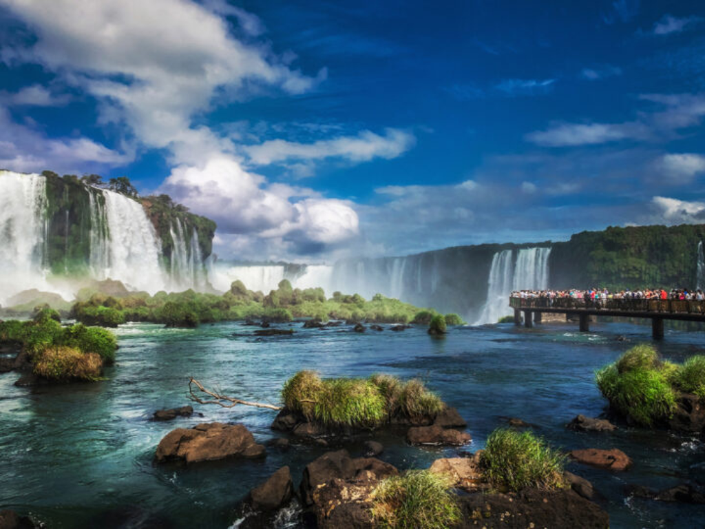

O Paraná é um dos estados mais desenvolvidos da região Sul do Brasil, conhecido por sua forte economia, rica diversidade cultural e belas paisagens naturais. Sua capital, Curitiba, é reconhecida internacionalmente pelo planejamento urbano e pela qualidade de vida. O estado possui importante produção agrícola, destacando-se no cultivo de soja, milho e trigo, além de um setor industrial bastante diversificado. Entre suas atrações naturais mais famosas estão as impressionantes Cataratas do Iguaçu, consideradas uma das maravilhas naturais do mundo e um dos principais destinos turísticos do país. O Paraná também abriga uma rica mistura de tradições herdadas de povos indígenas, imigrantes europeus e comunidades de diferentes regiões do Brasil.
